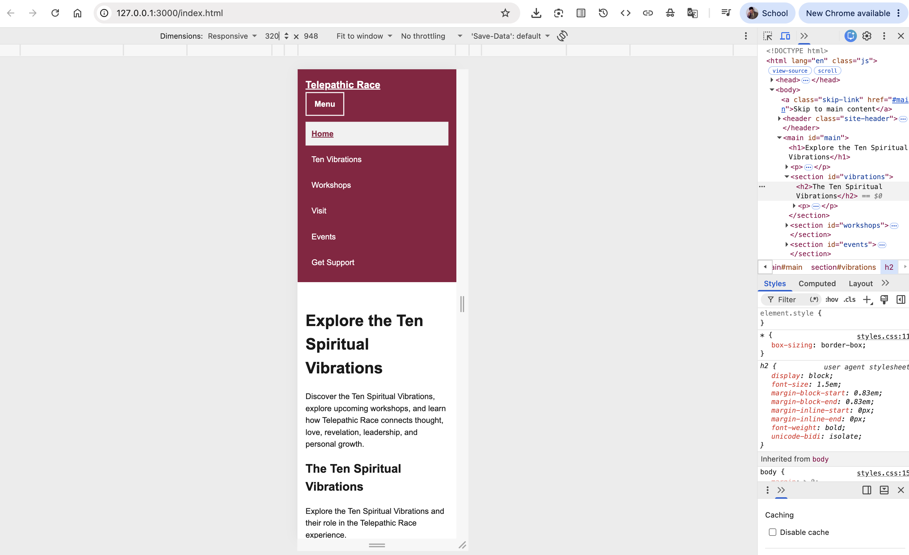
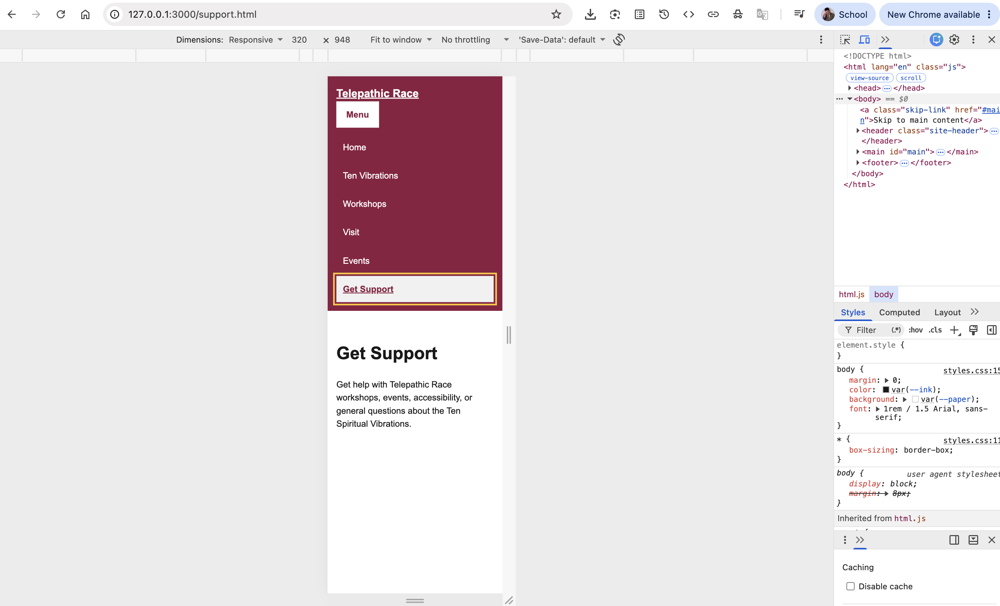

Student: Brian Love Site: Telepathic Race — Educational workshops and resources exploring the Ten Spiritual Vibrations.
| Destination | Final label | Order/group rationale |
|---|---|---|
| Home page | Home | Placed first because it provides the main starting point and overview of Telepathic Race. |
| Ten Spiritual Vibrations section | Ten Vibrations | Placed near the beginning because learning about the Ten Spiritual Vibrations is a primary visitor task. |
| Workshops section | Workshops | Follows Ten Vibrations so visitors can move from learning about the concept to exploring available workshops. |
| Visit page | Visit | Provides practical information for visitors who want to attend a Telepathic Race workshop or event. |
| Events section | Events | Gives visitors a direct destination for upcoming gatherings and learning opportunities. |
| Support page | Get Support | Placed last as a clear action for visitors who need assistance, accessibility information, or answers to questions. |
Method and widths tested: Started with the narrow vertical layout and tested the navigation at 320px. Then temporarily changed the navigation to a horizontal layout in Chrome DevTools and slowly resized the viewport from about 1000px downward to find where the content began to fail.
First content failure: The horizontal navigation first became jumbled and crowded at about 590px.
Chosen breakpoint in relative units: Chose 40em. At the browser's default 16px font size, 40em is about 640px, which gives the navigation additional space above the observed failure point of about 590px.
Long-label and zoom retest: Temporarily changed Visit to "Plan Your Telepathic Race Visit" and Get Support to "Request Telepathic Race Support." The longer labels reflowed without clipping or overlap, and I restored the original labels after testing. I also tested the site at 200% browser zoom. All navigation links remained available, the header reflowed, and the navigation remained usable.
| Condition | Expected | Observed | Result and repair |
|---|---|---|---|
| Keyboard: button, Tab, Escape, focus | The Menu button should work with Enter and Space. Tab should move through visible navigation links with a clear focus indicator. Escape should close an open menu and return focus to the Menu button. Hidden links should not receive focus. | Enter and Space opened and closed the menu. Tab moved through the visible links and the gold focus outline remained visible. Escape closed the open menu and returned focus to the Menu button. Hidden navigation links did not receive focus. | Pass. No repair was needed after the final keyboard test. |
| Pointer/touch targets | The Menu button and navigation links should provide comfortable clickable targets with adequate padding and spacing. Hover, active, and focus states should be clearly visible. | The Menu button and navigation links were easy to activate with the pointer. The links had comfortable padding and spacing, and the hover, active, and keyboard focus styles were visually distinct. | Pass. The Menu button uses a minimum height of 2.75rem and the navigation links use .75rem of padding. No additional repair was needed. |
| 320px and breakpoint region | At 320px, the navigation should have no clipping, overlap, horizontal scrolling, missing links, or cut-off focus indicators. Around the breakpoint, the layout should change without becoming crowded or broken. | At 320px, there was no clipping, overlap, or horizontal scrolling, and keyboard focus remained visible. During breakpoint testing, the horizontal navigation became jumbled at about 590px. With the final 40em breakpoint, the navigation remained vertical below the breakpoint and changed cleanly to the horizontal layout above it. | Pass. I used the observed failure around 590px to justify a 40em breakpoint, providing additional room before switching to the wide horizontal layout. |
| 200% zoom | At 200% browser zoom, every navigation link should remain available, text should remain readable, the header should reflow without overlap, and keyboard focus should remain visible. | At 200% zoom, all six navigation links remained available. The header reflowed, the text remained readable, nothing important overlapped, and the keyboard focus indicator remained visible. The Menu button continued to open and close the navigation. | Pass. No repair was needed after the 200% zoom test. |
| JavaScript unavailable | With JavaScript unavailable, the Menu button should remain hidden and all six navigation links should remain visible, clickable, and usable. | I temporarily disabled the navigation script and refreshed the page at a narrow width. The Menu button remained hidden, and all six navigation links remained visible and usable. The Telepathic Race brand link also continued to return to the Home page. | Pass. The navigation uses progressive enhancement, so JavaScript is not required to access any of the primary navigation links. I restored the script after testing. |
| CSS unavailable / wide recovery | Without CSS, the HTML should remain understandable and the links should remain usable in a logical order. For wide-layout recovery, closing the menu at a narrow width and then widening the viewport should make the full navigation visible regardless of the previous menu state. | With the stylesheet temporarily disabled, the HTML remained understandable and the navigation links remained usable. After restoring the stylesheet, I closed the menu at a narrow width and widened the viewport. All six navigation links automatically reappeared in the wide horizontal layout, and the Menu button disappeared. | Pass. The CSS-unavailable version remained usable. The wide-layout rule also overrides the closed narrow-menu state so the full navigation remains visible at wide widths. The stylesheet was restored after testing. |
Screenshot filenames and what each proves:
narrow-menu-open.png shows the responsive navigation at
320px with the Menu button activated and all six navigation destinations
visible. keyboard-focus.png shows the visible gold keyboard
focus indicator while navigating the responsive header with the keyboard.


Tester relationship (no name needed): Sister
Two tasks attempted: Task 1: Find information about the Ten Spiritual Vibrations. Task 2: Go to the page where you can get support.
What the tester did or said: For Task 1, the tester selected Ten Vibrations. For Task 2, the tester selected Get Support. No confusion was observed during either task.
Change made or justified: No change was necessary because the tester completed both navigation tasks successfully without coaching or any observed confusion.
Explain initialization, state synchronization, activation, and Escape/focus behavior in your own words. Refer to the exact variable, attribute, dataset value, function, and event used.
The button variable selects the element with the
.menu-button class, and the list variable
selects the navigation list with the #primary-nav ID.
The script adds the js class to the HTML element so the
CSS knows that JavaScript is available. It then reveals the Menu button
and initializes the navigation with data-open="false".
The named setMenuState() function keeps the menu states
synchronized. It changes the button's aria-expanded
attribute and the navigation list's data-open value to
either true or false. The CSS uses the data-open value
to determine whether the navigation list is visible at narrow widths.
The click event checks the current value of
aria-expanded and passes the opposite value to
setMenuState(). Because the control is a native button,
the browser already provides mouse, Enter, and Space activation without
additional keyboard code.
The keydown event checks whether the Escape key was pressed while the
menu is open. If it was, setMenuState(false) closes the
menu and button.focus() returns keyboard focus to the
Menu button.
Tool and purpose: ChatGPT was used as a tool under the AI-assisted with disclosure permission for this assignment. AI helped me critique navigation labels and it suggested minimal JavaScript. I was able to propose a breakpoint and test the navigation. The final decisions were my own.
Prompt/task: I used AI feedback on lables while making my own decisions about the Telepathic Race navigation, responsive layout, breakpoint, JavaScript behavior, and testing.
Accepted, changed, or rejected output: I accepted minimal JavaScript suggestions for progressive enhancement, menu state synchronization, and focus return. I reviewed each accepted JavaScript line and can explain what it does and why it is needed. I remained responsible for the final implementation and decisions.
How I verified it: I provided my own test evidence by testing the navigation at 320px, around the breakpoint, with longer labels, and at 200% zoom. I personally tested pointer activation, Enter, Space, Tab, Escape, focus return, JavaScript unavailable, CSS unavailable, and wide-layout recovery. I also verified all three pages, captured the required screenshots, and conducted the peer navigation test using my sister as a test subject.